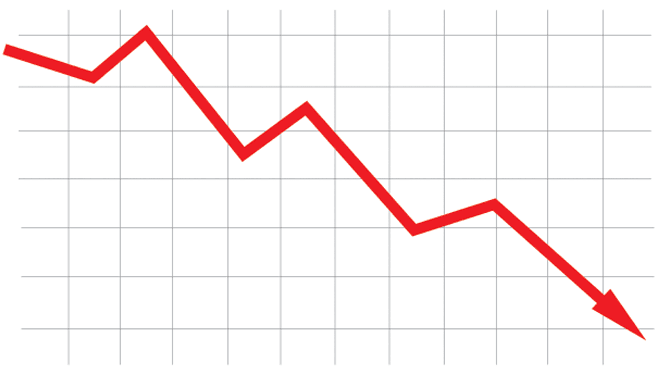

Slecht nieuws: lijn in grafiek gaat naar beneden
20 april 2026 door Lex de Bruijn
tags:
Niet satire
Dit ziet er niet goed uit: een lijn in een grafiek gaat naar beneden. De lijn is ook nog eens rood, dus het is echt foute boel.
In de grafiek is te zien dat de lijn een stuk hoger begon, maar dat het daarna snel bergafwaarts is gegaan. Oh ja hoor, er staat zelfs een pijl bij die naar beneden wijst. Wat een ellende.
Misschien verschijnt er binnenkort wel een nieuwe grafiek. Je zal zien dat die lijn dan nog verder gedaald is, want hij gaat blijkbaar al lange tijd naar beneden. Ze zullen de bodem van die nieuwe grafiek misschien zelfs naar beneden moeten halen voor die lijn.
Op het internet zijn ook artikelen over de grafiek verschenen. Er staan allemaal foto’s bij van mensen die heel bezorgd kijken. Er is zelfs een plaatje van iemand met een hand voor de mond. Oh man, dit kunnen we er nu echt niet bij hebben.